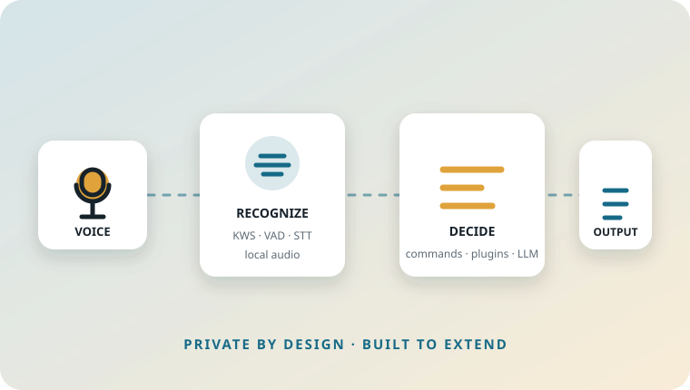

Atlas

A private voice assistant for the desktop
Atlas turns local audio into useful actions and spoken responses. Wake-word detection, speech recognition, semantic command matching, plugins, a local LLM and TTS work together without sending voice or text to a cloud service.
The shape of Atlas
flowchart LR
A([Voice]) --> B[Listener]
B --> C{Wake word}
C --> D[VAD + Whisper]
D --> E{Semantic router}
E -->|match| F[Built-in command]
E -->|plugin intent| G[Plugin process]
E -->|no match| H[Local LLM]
F --> I[Sound / TTS]
G --> I
H --> I
I --> J([Voice + UI])What is here today
| Area | Current implementation |
|---|---|
| Wake word | Sherpa-ONNX keyword spotter |
| Speech boundary | Silero VAD with pre-roll buffering |
| Transcription | Faster-Whisper |
| Routing | Sentence-transformer embeddings plus confidence thresholds |
| Extensions | Isolated JSON-lines plugin processes |
| Conversation fallback | Local GGUF model through llama-cpp-python |
| Voice output | Piper TTS and cached sound assets |
| Interface | Textual terminal UI |
Offline means local models still need setup
Atlas does not require a cloud account at runtime. Initial model downloads and manually supplied LLM files are described in Installation.
Choose a path
-
Requirements, source setup, model locations and the first launch checklist.
-
Lifecycle, event/command contracts, concurrency and output flow.
-
Manifest format, process isolation, stdin/stdout messages and examples.
-
Source code, issues and release artifacts.
Design compass
Fast
Expensive work is isolated behind queues and workers so microphone processing remains responsive.
Private
Recognition, routing, generation and speech synthesis run on the local machine.
Extensible
Plugins are external processes. They can be written independently and communicate through a small IPC surface.
The API is evolving
Atlas is in the v0.6 stabilization phase. The Plugin API and event contracts describe the current implementation, not a frozen long-term protocol.